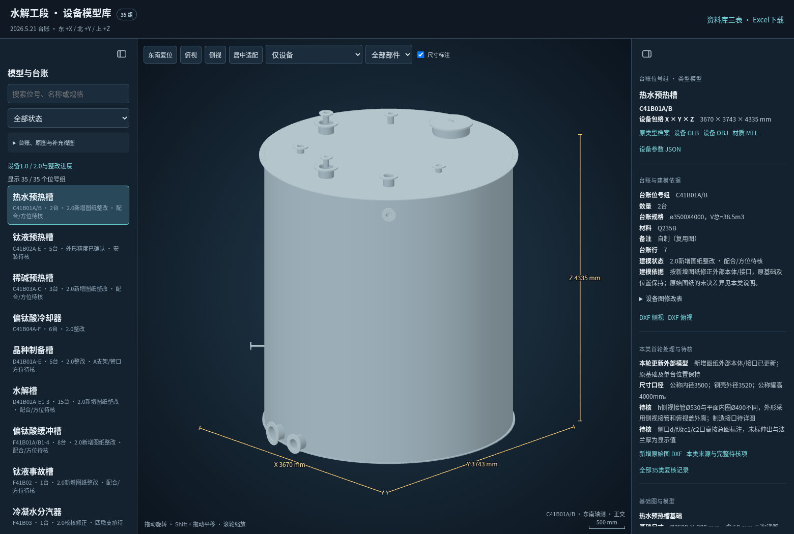

保留内径3500、钢壳外径3520、罐高4000及原底板/盖面
c1钢接管Ø159×4.5，瓷套管Ø136/Ø100×295
c2钢接管Ø219×6，瓷套管Ø165/Ø125×295
h盖位置已修好，保持；两台安装与原Ø3600×200基础保持
| 口号 | 名称/用途 | 公称口径 |
|---|---|---|
| a | 工艺水进口 | DN80 |
| b2/k2 | 蒸汽冷凝液进口 / 插入导管安装口 | DN80 |
| b1/k1 | 蒸汽进口 / 插入导管安装口 | DN65 |
| g | 备用口 | DN100 |
| m | 排气口 | DN150 |
| e | 液位计口 | DN80 |
| h | 简易人孔 | DN500 |
| d | 溢流口 | DN80 |
| f | 测温口 | DN25 |
| c1 | 稀释水出口（衬DN100瓷套管） | DN150 |
| c2 | 底水出口（衬DN125瓷套管） | DN200 |
原圆基础Ø3600×200，含50二次浇筑；A：X9.500/Y39.5998，B：X29.500/Y17.9998 m；两台原点EL112.200、旋转0°保持，绝对工艺方位继续待核。
h侧视接管Ø530与俯视内圈Ø490的差异保留；本轮保留已修正的盖面/法兰/提手同心关系。
其他管口的未标法兰厚度和伸出细部仍为展示值；未逐项升级为制造确认。
c1/c2瓷套管按详图长度295、外端2表达；保留原接口中心、朝向和法兰外廓，不为配合挪动接口。
两台中心与原点EL112.200沿用现布置；新接口绝对工艺方位待核，定位不等于全部接口已确认。
不展开槽内导管、衬砖和加固件；不增加本类图纸未列的搅拌器。


顶部补正：b1/k1、b2/k2按详图II补穿管盖板，修正套管中部敞口；盖厚10mm为展示值。原33件、h盖和安装位置保持。